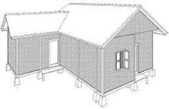

KAMPUNG MAHMUD

A.Sejarah singget
Eyang Dalem H. Abdul Manaf parantos lami ninggalkeun lemburna sarta cicing di tanah suci Mekah. Dina hiji waktu nalika badé uih ka lembur kalahiranana, anjeunna ngaraos aya firasat yén nagrina bakal dijajah ku bangsa deungeun, nya éta Walanda. Ku kituna, saacanna balik, anjeunna neneda kalayan khusyuk di hiji tempat anu disebat Gubah Mahmud. Gubah éta caket pisan sareng Masjidil Haram. Dina doana, anjeunna nyuhunkeun pituduh supados tiasa balik ka tempat anu moal kajiret ku jajahan. Pituduh anu dianggap salaku ilham éta masihan isyarat yén anjeunna bakal cicing di tempat anu rawa-rawa.

B.Lokasi
Kampung Mahmud mangrupikeun salah sahiji kampung adat anu aya di Kabupaten Bandung. Perenahna di RW 04, Désa Mekar Rahayu, Kecamatan Margaasih, wewengkon kidul Kabupaten Bandung. Jauhna kirang leuwih 6 km ti Soreang, anu minangka ibu kota kabupaten.
C.Struktur organisasi
Indikasina nyaéta sistem organisasi sosial anu dipaké nyaéta sistem kokolot anu asalna tina ajaran Islam. Hartina, sistem ieu ngajarkeun masarakat supaya hormat ka para sesepuh jeung karuhun, anu mapatahan ka anak incuna supaya tetep ngalaksanakeun ajaran anu geus diwariskeun, kaasup adat istiadat, sanajan jaman geus maju pesat. Pikeun ngalaksanakeun organisasi kemasyarakatan, padoman anu dipaké nyaéta ajaran agama Islam.
D.Sesebutan ngaran ketua adat
- Panghulu (Kapala Adat) - Salaku pamingpin pangluhurna dina urusan adat.
- Menteri Adat - Jalma-jalma anu kagungan pancén ngurus rupa-rupa widang dina komunitas adat, saperti adat kabiasaan, upacara, jeung pasualan masarakat.
- Panglima Adat - Pamingpin anu miboga pancén dina palaksanaan upacara adat atawa kagiatan kabudayaan séjénna.
- Juru Bicara Adat - Jalma anu tanggung jawab nyaluyukeun kaputusan-kaputusan adat ka masarakat lega.
E.Ngaran imah atawa bangunan kampung
- Imah Hunian (Imah Warga): Wangunan ieu dipaké minangka tempat cicing ku warga Kampung Mahmud. Aya tilu rupa suhunan (atap) anu biasana dipaké dina imah hunian, nyaéta:
- Suhunan Bapang: Atap anu ngabentuk hurup 'L'.
- Suhunan Lilimasan: Atap anu ngabentuk limas.
- Suhunan Parahu Kumureb: Atap anu ngabentuk siga parahu anu keur kumureb.
- Madrasah: Wangunan ieu dipaké pikeun kagiatan pendidikan agama Islam. Biasana ngagunakeun suhunan parahu kumureb.
- Masjid Agung: Masjid utama di Kampung Mahmud anu dipaké pikeun shalat berjamaah jeung kagiatan ibadah séjénna.
Salian ti éta, dina arsitéktur imah adat Kampung Mahmud, kapanggih 31 ngaran bagian arsitéktur anu miboga harti sémiotik husus. Sababaraha di antarana nyaéta:
- Panghampangan: Tempat pikeun narima tamu.
- Pangkeng: Kamar tidur.
- Goah: Tempat pikeun nyimpen parabotan atawa bahan pangan.
- Kolong Imah: Ruang di handapeun imah panggung anu biasana dipaké pikeun nyimpen parabot tani atawa ingon-ingon.
Bahan matérial anu dipaké dina ngawangun imah adat di Kampung Mahmud biasana basajan, saperti awi (bambu), kai (kayu), genténg, jeung batu. Cara ngadegkeun imah ogé ngalibetkeun upacara ritual anu dilakukeun saméméh, nalika, jeung sanggeus ngawangun imah, pikeun ngajaga harmoni jeung alam sapanjang prosés pangwangunan.
F. Jumlah bangunan
Jumlah penduduk Kampung Mahmud sakitar 1.200 urang, sarta dina hiji imah rata-rata aya 4-6 anggota kulawarga. Ku kituna, bisa diperkirakeun jumlah imah di kampung éta antara 200-300 imah.
Ditambah deui, di Kampung Mahmud aya wangunan umum sapertos:
- Masjid Agung Mahmud
- Madrasah (sakola agama)
- Makam Syekh Mahmud (karuhun kampung)
- Balai musyawarah atawa tempat kumpul warga
G. Aturan/Kapamalian kampung
- Teu meunang ngawangun imah tina témbok atawa kaca.
- Teu meunang ngagali sumur.
- Teu meunang maké bedug atawa alat musik gong.
- Teu meunang miara angsa.
- Pangunjung kudu nurut aturan waktu ziarah.
- Sadayana aturan ieu dijaga pikeun ngajaga kesakralan kampung sareng harmoni jeung alam.
- Teu meunang maké baju beureum waktu ziarah.
→ Warna beureum dianggap kurang sopan di tempat sakral. - Teu meunang masak daging waktu haul karuhun.
→ Acara haul di Kampung Mahmud biasana henteu maké lauk daging, tapi make lauk sayur. - Teu meunang ngajual tanah ka luar warga.
→ Supaya kampung tetep asli tur henteu kapangaruhan ku budaya luar. - Teu meunang hura-hura atawa gaduh sora ribut waktu magrib. → Magrib teh waktuna kanggo ibadah, jadi kudu tenang.
- Teu meunang neundeun bangkai hayam di tukangeun imah. → Lamun hayam maot, kudu langsung dikubur, sabab dipercaya bisa mawa sial.